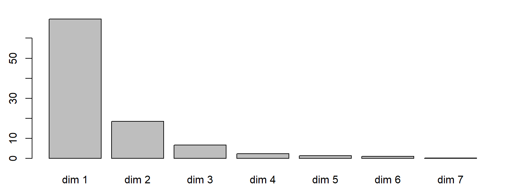
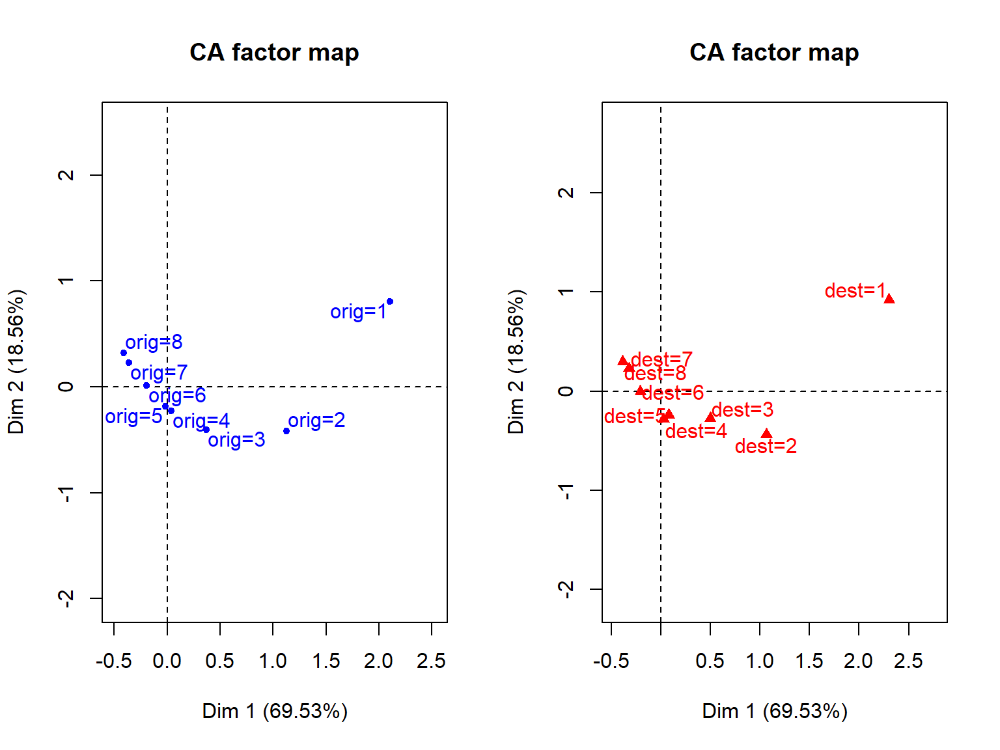
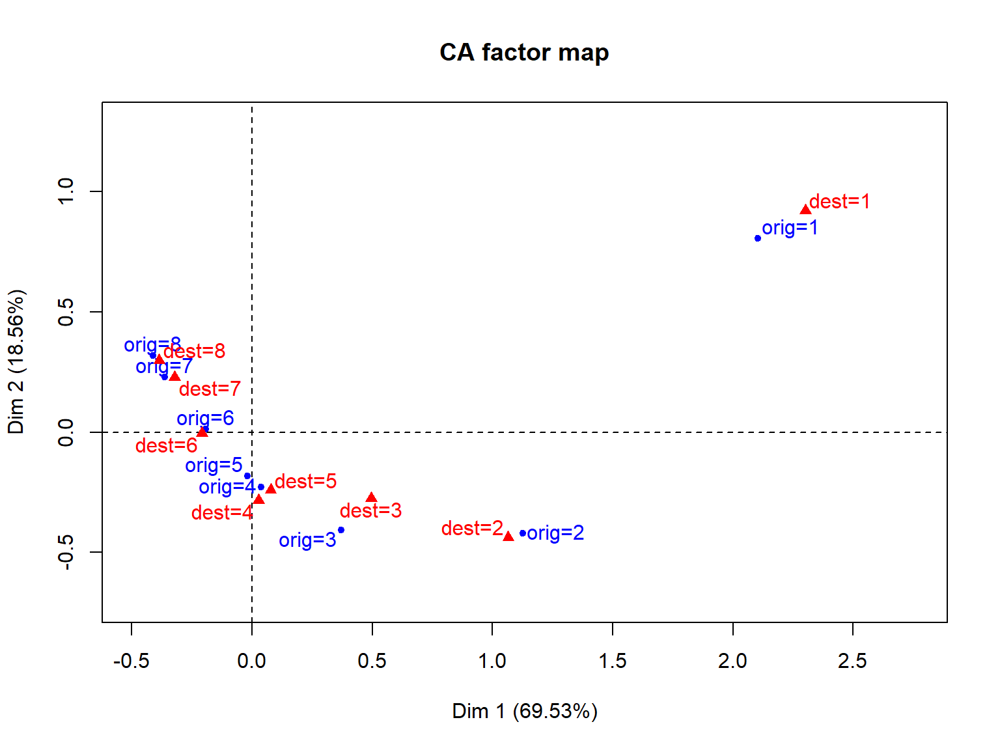

FX Jollois
Idée principale : Utiliser les principes de l’ACP en utilisant une autre métrique
Croisement de deux variables qualitatives, représentant les effectifs de chaque couple de modalité
| No | Yes | |
|---|---|---|
| 1st | 122 | 203 |
| 2nd | 167 | 118 |
| 3rd | 528 | 178 |
| Crew | 673 | 212 |
Ici, nous représentons les passagers du Titanic répartis sur leur classe (1ère, 2nde, 3ème et équipage) et leur surie ou non (i.e. 178 passagers en 3ème classe ont survécu au naufrage).
Visualiser les liens entre les deux variables
Objectifs similaires à l’ACP
Tableau analysé :
Comparaison des distributions en fréquences absolues
Rappel de l’Indépendance : \(P(AB) = P(A)P(B)\)
\(\chi^2\) : Mesure de l’écart à l’indépendance \[ \chi^2 (X,Y) = n \sum_{i=1}^p \sum_{j=1}^q \frac{\left( f_{ij} - f_{i.} f_{.j} \right)^2}{f_{i.} f_{.j}}\]
Idée : Les profils lignes et les profils colonnes sont deux nuages de points sur lesquels on pourra appliquer une ACP
Distance entre 2 modalités de \(X\) :
\[ d_{\chi^2}^2(i,i') = \sum_{j=1}^q \frac{n}{t_{.j}} \left( \frac{t_{ij}}{t_{i.}} - \frac{t_{i'j}}{t_{i'.}} \right)^2 \]
Cela revient à utiliser la métrique \(n\mathbf{D}_Y^{-1}\) sur les profils lignes, ce qu’on appelle la métrique du \(\chi^2\).
Idem pour les colonnes.
Inertie du nuage des profils lignes, par rapport au centre de gravité de ce nuage \(g_\ell = (f_{.j})\) :
\[ I_{g_\ell} = \sum_{i=1}^p \frac{t_{i.}}{n} d_{\chi^2}^2 (i, g_\ell) = \chi^2 (X,Y) \]
Idem pour les colonnes.
Regroupement de modalités ne modifiant pas l’inertie et donc la valeur du \(\chi^2\), ni même les distances. C’est l’équivalence distributionnelle.
Deux possibilités totalement symétriques :
| Info | Profil lignes | Profil colonnes |
|---|---|---|
| Données \(Z\) | \(D_X^{-1}T\) | \(D_Y^{-1}T'\) |
| Métrique \(M\) | \(nD_Y^{-1}\) | \(nD_X^{-1}\) |
| Poids \(D\) | \(D_X/n\) | \(D_Y/n\) |
| Centre | \(Z'D1\) | |
| Variance-covariance | \(V = Z'DZ - gg'\) |
Les deux nuages de points, et donc les deux ensembles de modalités (de \(X\) et de \(Y\)) peuvent être représentés sur le même graphique.
Le cercle de corrélations n’a aucun intérêt ici.
Idem que pour l’ACP et que pour les contributions.
Modalités supplémentaires ne participant pas au calcul, mais pouvant être représentés sur les graphiques :
Regroupement de modalités
Travail envisageable sur un jeu de données Individus x Variables, sous quelques conditions :
Nous utilisons les données occupationalStatus, qui nous donne la répartition d’hommes britaniques suivant le statut professionnel de leur père (en ligne) et le leur (en colonne). Les statuts sont codés de 1 à 8, et nous n’avons aucune information sur ceux-ci.
| dest=1 | dest=2 | dest=3 | dest=4 | dest=5 | dest=6 | dest=7 | dest=8 | Sum | |
|---|---|---|---|---|---|---|---|---|---|
| orig=1 | 50 | 19 | 26 | 8 | 7 | 11 | 6 | 2 | 129 |
| orig=2 | 16 | 40 | 34 | 18 | 11 | 20 | 8 | 3 | 150 |
| orig=3 | 12 | 35 | 65 | 66 | 35 | 88 | 23 | 21 | 345 |
| orig=4 | 11 | 20 | 58 | 110 | 40 | 183 | 64 | 32 | 518 |
| orig=5 | 2 | 8 | 12 | 23 | 25 | 46 | 28 | 12 | 156 |
| orig=6 | 12 | 28 | 102 | 162 | 90 | 554 | 230 | 177 | 1355 |
| orig=7 | 0 | 6 | 19 | 40 | 21 | 158 | 143 | 71 | 458 |
| orig=8 | 0 | 3 | 14 | 32 | 15 | 126 | 91 | 106 | 387 |
| Sum | 103 | 159 | 330 | 459 | 244 | 1186 | 593 | 424 | 3498 |
| dest=1 | dest=2 | dest=3 | dest=4 | dest=5 | dest=6 | dest=7 | dest=8 | Sum | |
|---|---|---|---|---|---|---|---|---|---|
| orig=1 | 1.43 | 0.54 | 0.74 | 0.23 | 0.20 | 0.31 | 0.17 | 0.06 | 3.69 |
| orig=2 | 0.46 | 1.14 | 0.97 | 0.51 | 0.31 | 0.57 | 0.23 | 0.09 | 4.29 |
| orig=3 | 0.34 | 1.00 | 1.86 | 1.89 | 1.00 | 2.52 | 0.66 | 0.60 | 9.86 |
| orig=4 | 0.31 | 0.57 | 1.66 | 3.14 | 1.14 | 5.23 | 1.83 | 0.91 | 14.81 |
| orig=5 | 0.06 | 0.23 | 0.34 | 0.66 | 0.71 | 1.32 | 0.80 | 0.34 | 4.46 |
| orig=6 | 0.34 | 0.80 | 2.92 | 4.63 | 2.57 | 15.84 | 6.58 | 5.06 | 38.74 |
| orig=7 | 0.00 | 0.17 | 0.54 | 1.14 | 0.60 | 4.52 | 4.09 | 2.03 | 13.09 |
| orig=8 | 0.00 | 0.09 | 0.40 | 0.91 | 0.43 | 3.60 | 2.60 | 3.03 | 11.06 |
| Sum | 2.94 | 4.55 | 9.43 | 13.12 | 6.98 | 33.91 | 16.95 | 12.12 | 100.00 |
| dest=1 | dest=2 | dest=3 | dest=4 | dest=5 | dest=6 | dest=7 | dest=8 | Sum | |
|---|---|---|---|---|---|---|---|---|---|
| orig=1 | 38.76 | 14.73 | 20.16 | 6.20 | 5.43 | 8.53 | 4.65 | 1.55 | 100 |
| orig=2 | 10.67 | 26.67 | 22.67 | 12.00 | 7.33 | 13.33 | 5.33 | 2.00 | 100 |
| orig=3 | 3.48 | 10.14 | 18.84 | 19.13 | 10.14 | 25.51 | 6.67 | 6.09 | 100 |
| orig=4 | 2.12 | 3.86 | 11.20 | 21.24 | 7.72 | 35.33 | 12.36 | 6.18 | 100 |
| orig=5 | 1.28 | 5.13 | 7.69 | 14.74 | 16.03 | 29.49 | 17.95 | 7.69 | 100 |
| orig=6 | 0.89 | 2.07 | 7.53 | 11.96 | 6.64 | 40.89 | 16.97 | 13.06 | 100 |
| orig=7 | 0.00 | 1.31 | 4.15 | 8.73 | 4.59 | 34.50 | 31.22 | 15.50 | 100 |
| orig=8 | 0.00 | 0.78 | 3.62 | 8.27 | 3.88 | 32.56 | 23.51 | 27.39 | 100 |
| dest=1 | dest=2 | dest=3 | dest=4 | dest=5 | dest=6 | dest=7 | dest=8 | |
|---|---|---|---|---|---|---|---|---|
| orig=1 | 48.54 | 11.95 | 7.88 | 1.74 | 2.87 | 0.93 | 1.01 | 0.47 |
| orig=2 | 15.53 | 25.16 | 10.30 | 3.92 | 4.51 | 1.69 | 1.35 | 0.71 |
| orig=3 | 11.65 | 22.01 | 19.70 | 14.38 | 14.34 | 7.42 | 3.88 | 4.95 |
| orig=4 | 10.68 | 12.58 | 17.58 | 23.97 | 16.39 | 15.43 | 10.79 | 7.55 |
| orig=5 | 1.94 | 5.03 | 3.64 | 5.01 | 10.25 | 3.88 | 4.72 | 2.83 |
| orig=6 | 11.65 | 17.61 | 30.91 | 35.29 | 36.89 | 46.71 | 38.79 | 41.75 |
| orig=7 | 0.00 | 3.77 | 5.76 | 8.71 | 8.61 | 13.32 | 24.11 | 16.75 |
| orig=8 | 0.00 | 1.89 | 4.24 | 6.97 | 6.15 | 10.62 | 15.35 | 25.00 |
| Sum | 100.00 | 100.00 | 100.00 | 100.00 | 100.00 | 100.00 | 100.00 | 100.00 |
| Valeur propre | Variance (%) | Cumulée (%) | |
|---|---|---|---|
| dim 1 | 0.28 | 69.53 | 69.53 |
| dim 2 | 0.08 | 18.56 | 88.08 |
| dim 3 | 0.03 | 6.75 | 94.83 |
| dim 4 | 0.01 | 2.46 | 97.29 |
| dim 5 | 0.01 | 1.41 | 98.70 |
| dim 6 | 0.00 | 1.05 | 99.75 |
| dim 7 | 0.00 | 0.25 | 100.00 |

2 axes suffisent à représenter 88.1% de l’information présente dans les données.


| contrib 1 | contrib 2 | contrib 3 | contrib 4 | contrib 5 | |
|---|---|---|---|---|---|
| orig=1 | 57.96 | 31.92 | 5.88 | 0.00 | 0.37 |
| orig=2 | 19.37 | 10.11 | 45.34 | 0.77 | 9.49 |
| orig=3 | 4.81 | 21.63 | 0.24 | 5.03 | 9.39 |
| orig=4 | 0.08 | 10.28 | 19.46 | 0.02 | 0.11 |
| orig=5 | 0.01 | 1.99 | 0.29 | 16.01 | 43.10 |
| orig=6 | 5.09 | 0.09 | 6.01 | 2.45 | 23.28 |
| orig=7 | 6.07 | 9.05 | 6.17 | 45.16 | 0.29 |
| orig=8 | 6.62 | 14.93 | 16.61 | 30.56 | 13.97 |
| Sum | 100.00 | 100.00 | 100.00 | 100.00 | 100.00 |
| qualité 1 | qualité 2 | qualité 3 | qualité 4 | qualité 5 | Somme | |
|---|---|---|---|---|---|---|
| orig=1 | 0.86 | 0.13 | 0.01 | 0.00 | 0.00 | 1.00 |
| orig=2 | 0.72 | 0.10 | 0.16 | 0.00 | 0.01 | 1.00 |
| orig=3 | 0.43 | 0.52 | 0.00 | 0.02 | 0.02 | 0.98 |
| orig=4 | 0.01 | 0.52 | 0.36 | 0.00 | 0.00 | 0.90 |
| orig=5 | 0.00 | 0.22 | 0.01 | 0.23 | 0.36 | 0.81 |
| orig=6 | 0.77 | 0.00 | 0.09 | 0.01 | 0.07 | 0.95 |
| orig=7 | 0.56 | 0.22 | 0.05 | 0.15 | 0.00 | 0.98 |
| orig=8 | 0.49 | 0.29 | 0.12 | 0.08 | 0.02 | 1.00 |
| contrib 1 | contrib 2 | contrib 3 | contrib 4 | contrib 5 | |
|---|---|---|---|---|---|
| dest=1 | 55.37 | 33.26 | 7.44 | 0.00 | 0.13 |
| dest=2 | 18.32 | 11.56 | 45.67 | 0.93 | 4.50 |
| dest=3 | 8.25 | 9.59 | 0.22 | 3.66 | 0.12 |
| dest=4 | 0.03 | 14.10 | 11.29 | 0.81 | 7.10 |
| dest=5 | 0.15 | 5.39 | 2.17 | 4.72 | 41.76 |
| dest=6 | 5.22 | 0.01 | 11.06 | 0.58 | 36.64 |
| dest=7 | 6.23 | 11.74 | 6.48 | 47.46 | 0.49 |
| dest=8 | 6.42 | 14.35 | 15.66 | 41.83 | 9.27 |
| Sum | 100.00 | 100.00 | 100.00 | 100.00 | 100.00 |
| qualité 1 | qualité 2 | qualité 3 | qualité 4 | qualité 5 | Somme | |
|---|---|---|---|---|---|---|
| dest=1 | 0.85 | 0.14 | 0.01 | 0.00 | 0.00 | 1.00 |
| dest=2 | 0.70 | 0.12 | 0.17 | 0.00 | 0.00 | 1.00 |
| dest=3 | 0.73 | 0.23 | 0.00 | 0.01 | 0.00 | 0.97 |
| dest=4 | 0.01 | 0.66 | 0.19 | 0.01 | 0.03 | 0.90 |
| dest=5 | 0.04 | 0.42 | 0.06 | 0.05 | 0.25 | 0.83 |
| dest=6 | 0.72 | 0.00 | 0.15 | 0.00 | 0.10 | 0.97 |
| dest=7 | 0.53 | 0.27 | 0.05 | 0.14 | 0.00 | 0.99 |
| dest=8 | 0.48 | 0.28 | 0.11 | 0.11 | 0.01 | 1.00 |
Il y a clairement un lien entre les deux variables.
## Warning in chisq.test(o): Chi-squared approximation may be incorrect##
## Pearson's Chi-squared test
##
## data: o
## X-squared = 1416, df = 49, p-value < 2.2e-16Différence entre observé et estimé.
| dest=1 | dest=2 | dest=3 | dest=4 | dest=5 | dest=6 | dest=7 | dest=8 | |
|---|---|---|---|---|---|---|---|---|
| orig=1 | 23.71 | 5.42 | 3.96 | -2.17 | -0.67 | -4.95 | -3.39 | -3.45 |
| orig=2 | 5.51 | 12.71 | 5.28 | -0.38 | 0.17 | -4.33 | -3.46 | -3.56 |
| orig=3 | 0.58 | 4.88 | 5.69 | 3.08 | 2.23 | -2.68 | -4.64 | -3.22 |
| orig=4 | -1.09 | -0.73 | 1.31 | 5.10 | 0.64 | 0.56 | -2.54 | -3.89 |
| orig=5 | -1.21 | 0.34 | -0.71 | 0.56 | 4.28 | -0.95 | 0.30 | -1.59 |
| orig=6 | -4.42 | -4.28 | -2.28 | -1.18 | -0.46 | 4.41 | 0.02 | 1.00 |
| orig=7 | -3.67 | -3.25 | -3.68 | -2.59 | -1.94 | 0.22 | 7.42 | 2.08 |
| orig=8 | -3.38 | -3.48 | -3.73 | -2.64 | -2.31 | -0.46 | 3.14 | 8.63 |